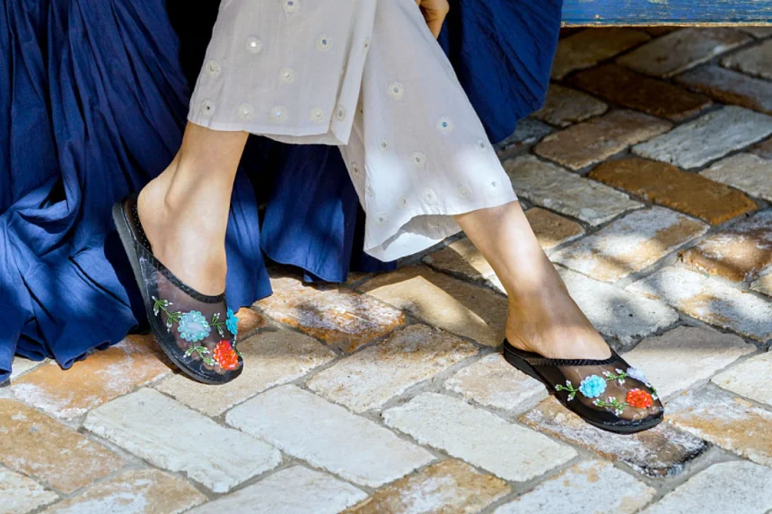
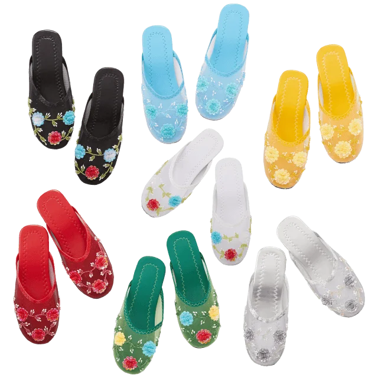

ハウス オブ ロータスの、
カゴバッグとビーズのサンダル
市場から、街へ。
カラフル、かわいい、気持ちいい。
いくつも欲しくなる、
プラカゴとサンダルです。
プラカゴバッグ
アジアの国の、ふつうの暮らしの中にあるものに、
かれんさんは「かわいい」や「かっこいい」を見つけます。
今回、紹介する小物は、ベトナムから来た、
プラカゴバッグと、ビーズ刺繍のサンダル。
どちらもカラフルで、かわいくて、
いくつも欲しくなってしまいそうです。
プラカゴバッグは、
サイズのバリエーションも豊富。
お出かけやお買いものだけでなく、
入れるもの、使う場所、
いろいろ考えるのもたのしいアイテムです。
ビーズ刺繍がかわいいサンダルは、
履くだけで、よそおいが華やかに。
涼しいメッシュ素材で、
夏の足元をおしゃれに演出してくれますよ。
荷造り用のプラスチックのバンドを編んで、
市場での仕入れや運搬のためにつくられ、
じっさい、今もそうして使われている、プラカゴ。
それをギンガム模様でつくったら、
おしゃれなプラカゴバッグになりました。
素材の特徴そのままに、丈夫で、水に強く、
汚れたら洗い流せるので、お手入れも簡単です。
色は７色。
サイズも、XSからXLまで5種類あって、
何を入れようか、どこで使おうか、
考えるだけで楽しくなります。
お出かけのバッグとしてはもちろん、
収納グッズとして棚に並べて使っても。
水に強いので、バスルームやキッチン、
ガーデニングにもおすすめです。

ベトナムの靴職人さんのていねいな手仕事で、
ひとつひとつ、刺繍をほどこした、ビーズサンダルです。
履くだけで、華やかなよそおいに。
カラーは、７色。
どれもエキゾチックなかわいさがあり、
ひとつだけ選ぶのは、なかなかむずかしそう。
手頃な価格ですから、
色違いでそろえたくなるアイテムです。

メッシュ素材で通気性がありますから、
暑い季節でも蒸れず、快適。
そして、とても軽く、クッション性もあって、
見た目以上に機能的なサンダルなんです。
ぺたんこではないことも、疲れにくいポイント。
軽やかなステップで、
どんどん歩いていけそうですよ。